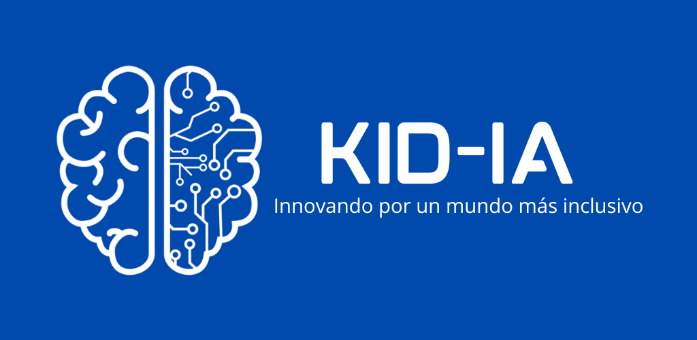

POLÍTICA DE PRIVACIDAD DE KIDIA
-
Términos y Condiciones de Privacidad de Datos Personales de Menores de Edad
- KID-IA
- Última actualización: 6 de octubre de 2025
-
1. Identidad y domicilio del responsable
- Responsable: KID-IA, titular del tratamiento de datos personales recabados a través de su aplicación móvil y plataformas relacionadas.
- Domicilio: [indicar domicilio fiscal o comercial de KID-IA]
- Correo de contacto: soporte@kidia.app
-
2. Finalidad del tratamiento
- Los datos personales serán tratados exclusivamente para fines educativos, lúdicos y de apoyo terapéutico complementario, sin constituir diagnóstico ni tratamiento médico.
- Finalidades principales (indispensables):
- Crear y administrar el perfil educativo del menor.
- Personalizar actividades según edad y nivel cognitivo.
- Generar reportes de avance para padres/tutores y especialistas designados.
- Garantizar la seguridad y correcto funcionamiento de la aplicación.
- Finalidades secundarias (opcionales):
- Analítica estadística y mejora de la plataforma.
- Envío de comunicaciones informativas y actualizaciones del proyecto.
El tutor puede negar o revocar el consentimiento para las finalidades secundarias en cualquier momento.
-
3. Datos personales recabados
- Del menor:
- Alias o iniciales (no se recomienda nombre completo).
- Edad, rango escolar o nivel cognitivo.
- Métricas de uso: tiempos, aciertos, progreso, interacciones.
- Del tutor:
- Nombre y correo electrónico.
- Relación con el menor (madre, padre o tutor legal).
- Consentimiento expreso e informado.
- De especialistas (si el tutor los designa):
- Nombre, puesto y correo electrónico.
-
4. Naturaleza del tratamiento
- El uso de KID-IA es educativo y no intervencional.
- No sustituye diagnóstico, prescripción ni tratamiento médico.
-
5. Consentimiento informado
- El uso de la app requiere el consentimiento expreso del padre, madre o tutor legal.
- Se recaba digitalmente durante el registro.
- Incluye aceptación de este aviso y de los Términos de Uso.
- Puede revocarse en cualquier momento escribiendo a soporte@kidia.app.
- En caso de centros educativos o de terapia, el consentimiento se obtiene antes de registrar al menor.
-
6. Derechos ARCO
- Los tutores podrán ejercer en cualquier momento los derechos de:
- Acceso: conocer qué datos se conservan.
- Rectificación: solicitar corrección.
- Cancelación: solicitar eliminación definitiva.
- Oposición: oponerse a determinado uso.
- Solicitudes vía soporte@kidia.app
-
7. Transferencia de datos
- KID-IA no comercializa ni transfiere datos personales de menores.
- Solo comparte información con:
- Especialistas o centros designados por el tutor.
- Proveedores tecnológicos de nube y soporte con contratos de confidencialidad.
- Todas las transferencias cumplen con el artículo 37 de la LFPDPPP.
-
8. Conservación y eliminación
- Los datos se conservan mientras la cuenta esté activa.
- Al eliminar la cuenta o revocar el consentimiento, los datos se seudonimizan y eliminan en un máximo de 12 meses.
- Se emplean mecanismos automatizados de eliminación segura.
-
9. Medidas de seguridad y alojamiento
- Los datos se alojan en infraestructura certificada ISO 27001 y SOC 2, en centros de datos ubicados en:
- Región primaria: México (AWS México Este o Google Cloud México).
- Respaldo cifrado: Irlanda o Estados Unidos (solo para redundancia y conforme a cláusulas contractuales tipo).
- Medidas técnicas:
- Cifrado AES-256 en reposo y TLS 1.3 en tránsito.
- Accesos diferenciados por rol (tutor, especialista, administrador).
- Registro de auditoría, autenticación multifactor y monitoreo continuo.
- Revisión anual de políticas de seguridad y privacidad.
-
10. Uso de cookies o rastreo
- KID-IA no utiliza cookies publicitarias ni de terceros.
- Solo recopila analítica interna anónima para optimizar el aprendizaje, sin asociarla con identidad real.
-
11. Modificaciones al aviso
- Cualquier modificación será publicada en la app y en kidia.app/privacidad, indicando fecha de actualización.
-
12. Autoridad de protección de datos
- En caso de considerar vulnerado su derecho a la protección de datos, puede acudir al Instituto Nacional de Transparencia, Acceso a la Información y Protección de Datos Personales (INAI): www.inai.org.mx
-
13. Contacto directo
- Responsable de Privacidad — KID-IA
- soporte@kidia.app
- Lunes a viernes de 9:00 a 18:00 h (CDMX)